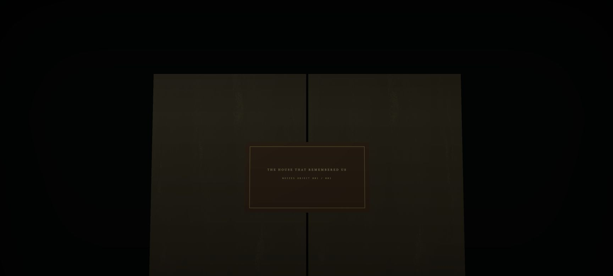
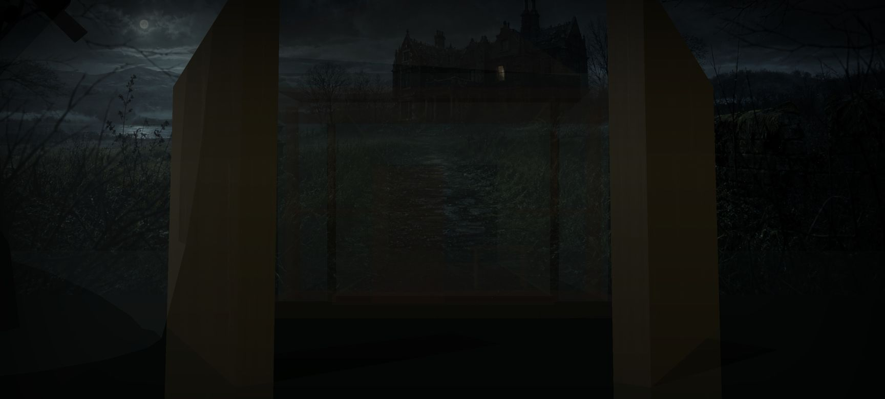
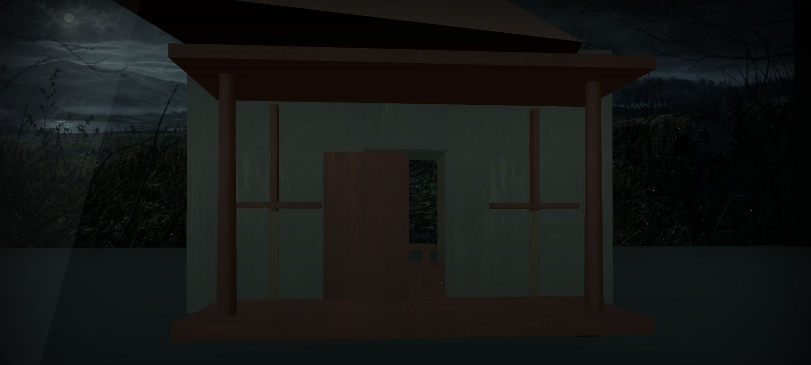
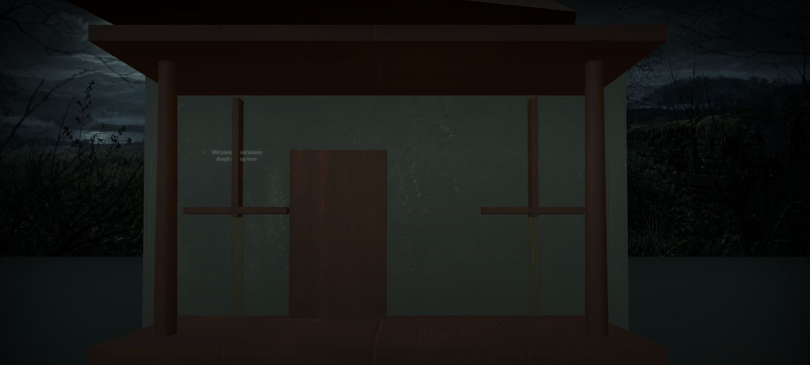
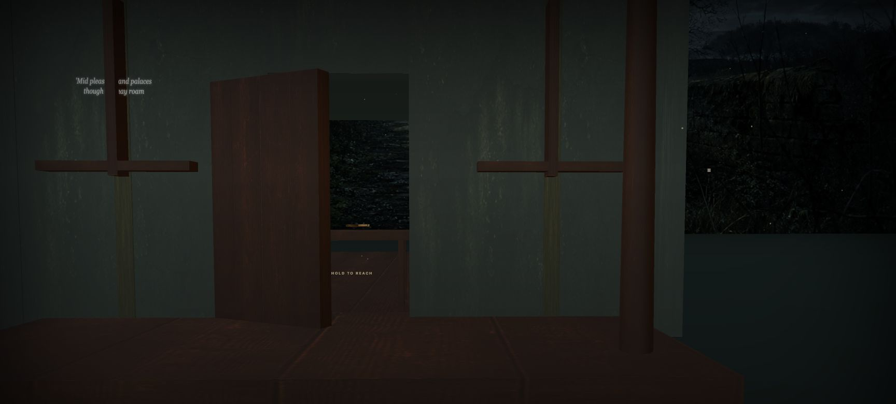
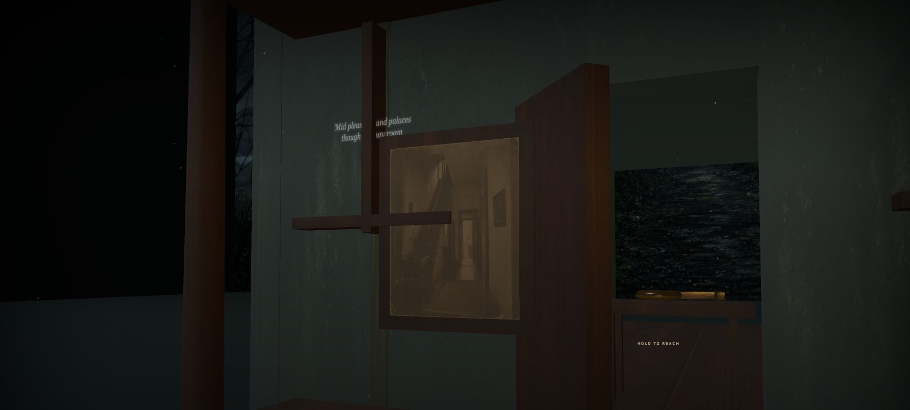
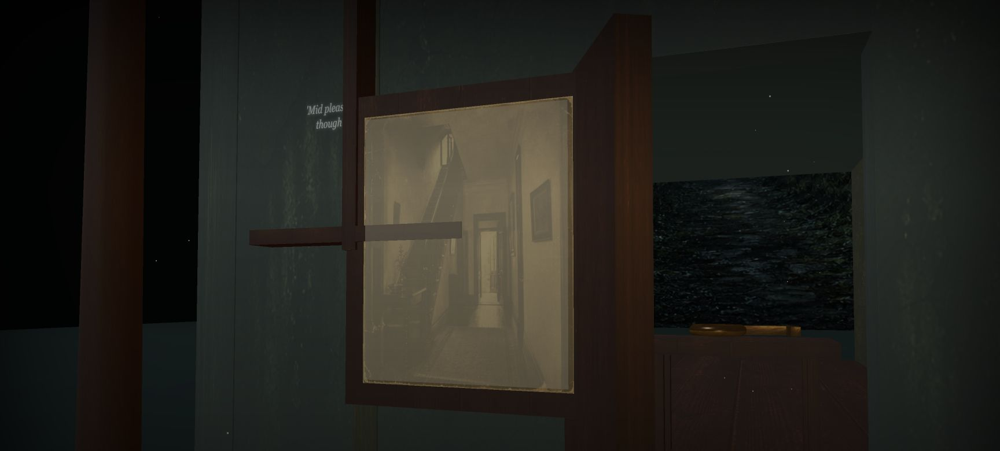
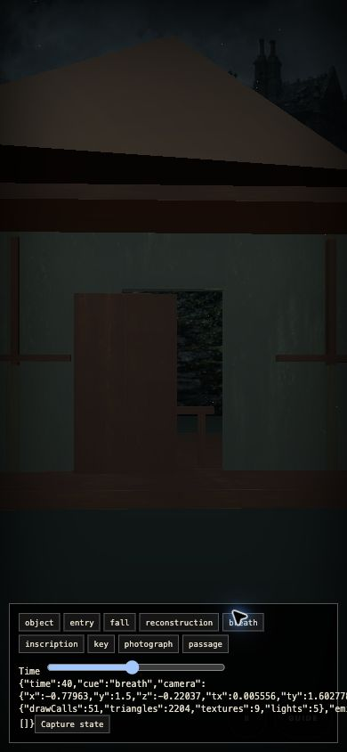

Browser-captured states from the 84-second full-world vertical slice. These frames verify spatial construction, material recovery, object interaction and the photograph passage at the package’s actual runtime.







